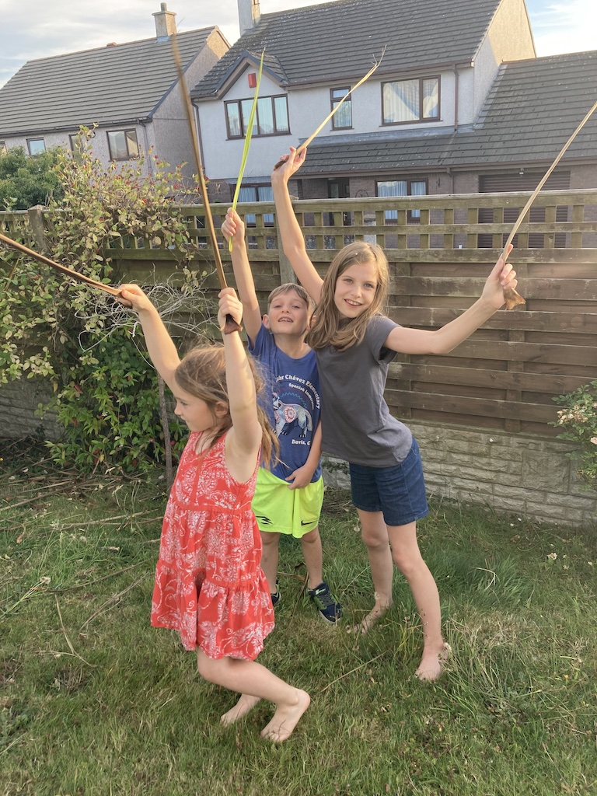
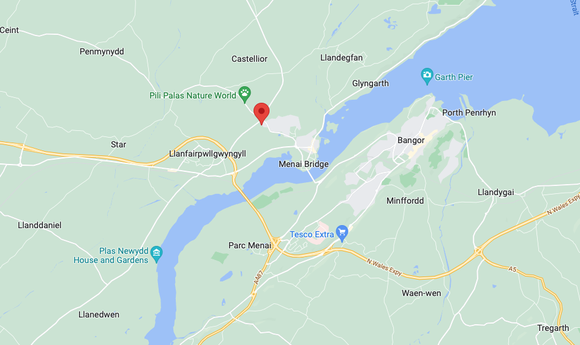
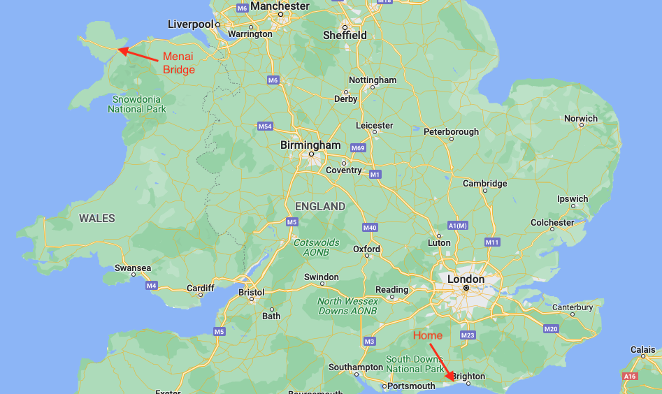
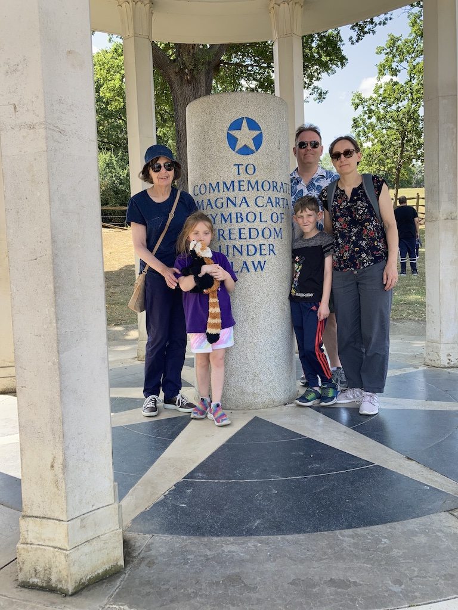
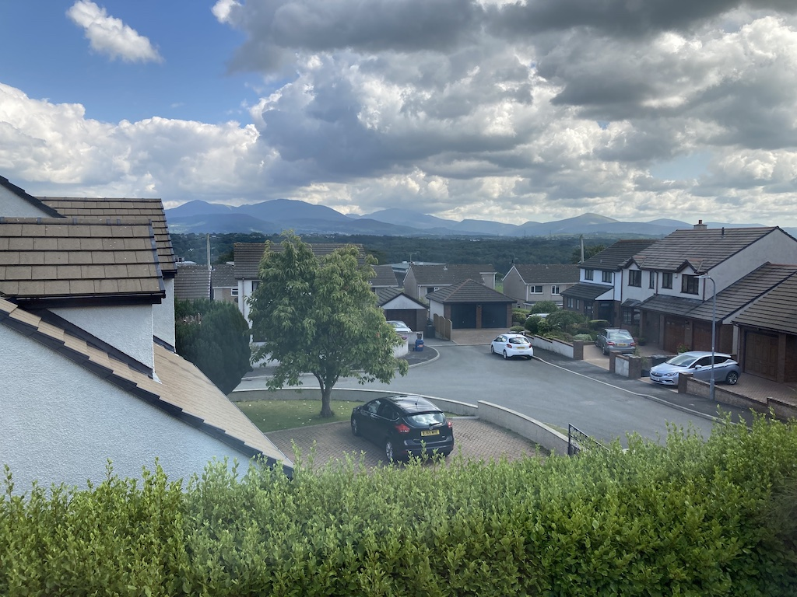
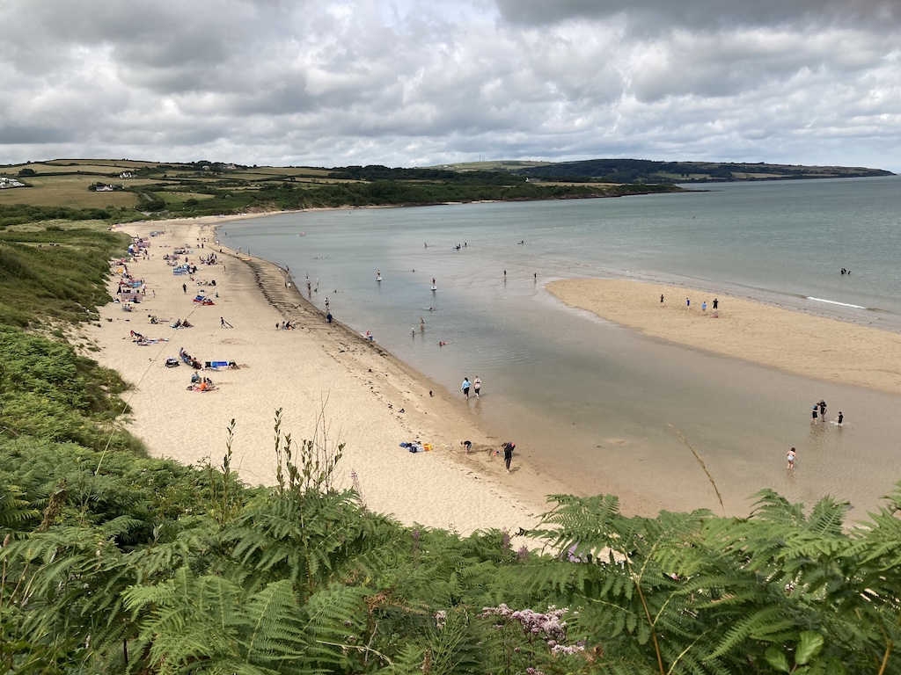
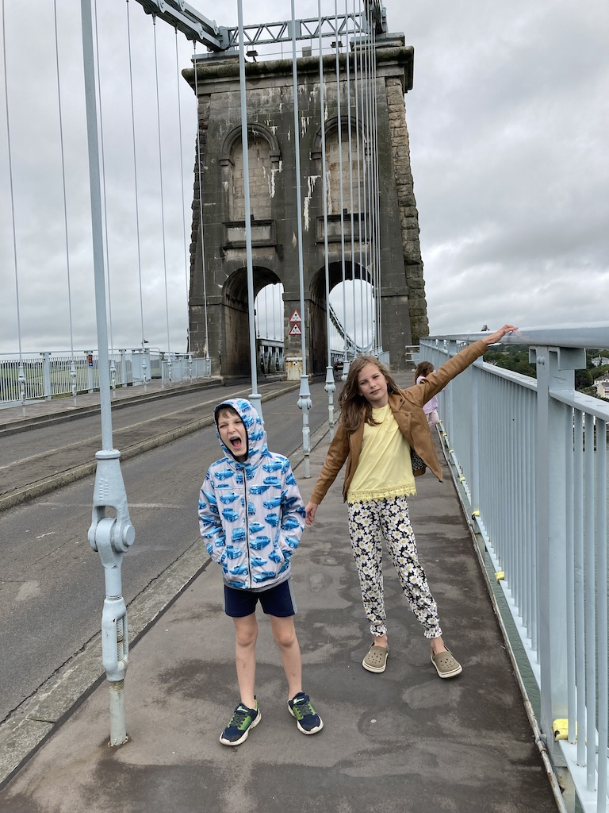
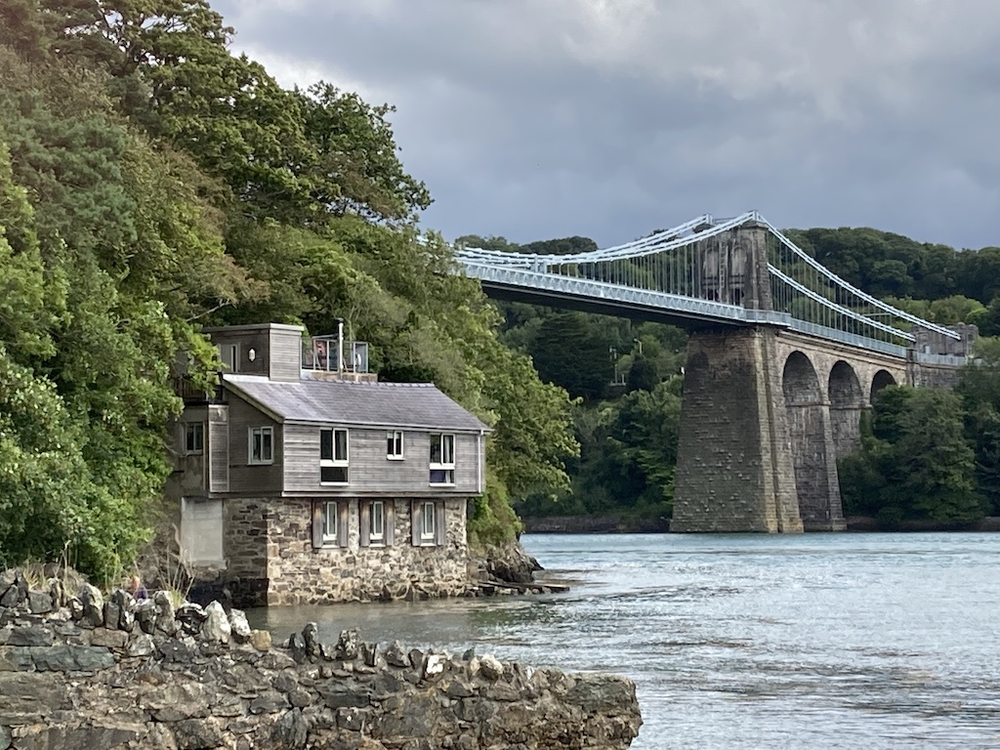
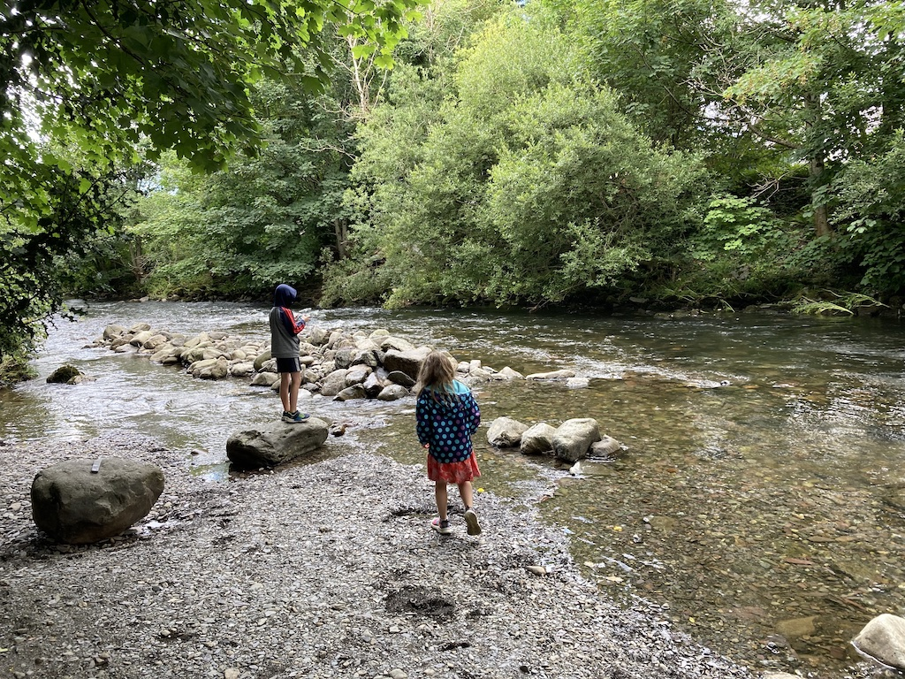
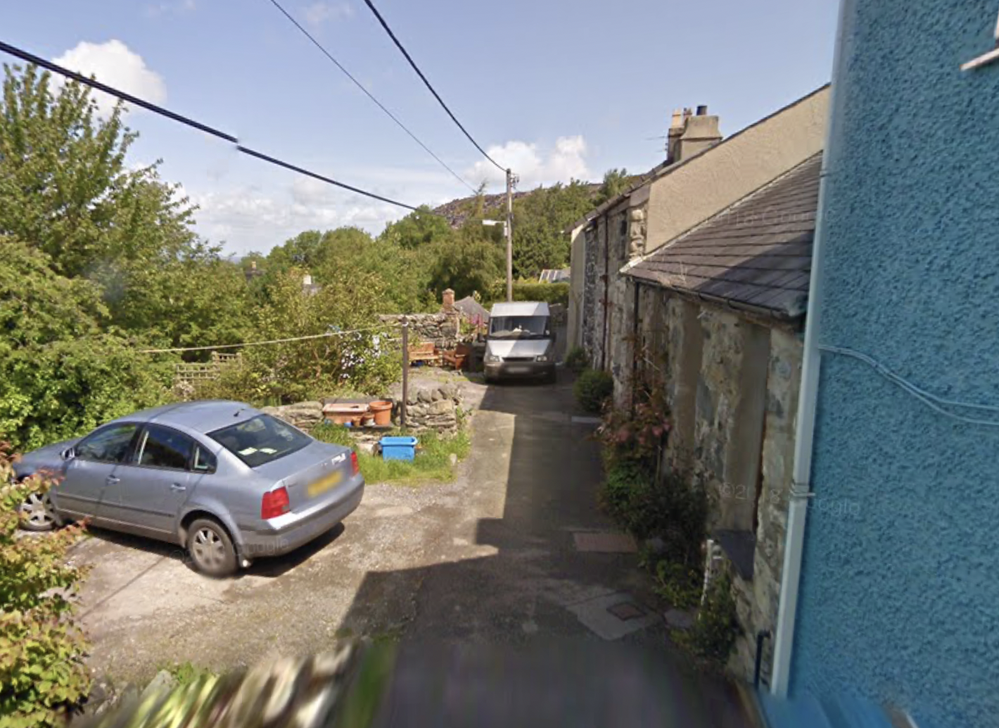

The story about this trip started in January 2020, although it has its origin in 1979. You see, in March 1979, just before Paul was born, we bought a somewhat dilapidated cottage in North Wales. We were living in Lymm in Cheshire at the time and so then spent the next 15 years renovating the cottage, but, more importantly, spent weekends and holidays there. Now that Victoria and her family live in the USA and Paul and his family live in the Netherlands, it seemed like a good idea to all get together for a week in North Wales and show our grandchildren some of the sights that our children enjoyed. We had mountains, castles, slate mines and narrow-gauge railways in mind. So in January 2020 I booked a house in Menai Bridge on Angelsea for the first week in August.
Then came Covid-19!
It so happened that by the end of July restrictions were eased and we were able to travel to North Wales. However, neither Victoria nor Paul were allowed to come into the UK. We couldn't cancel the booking, because we could go there, so the only option was to move the booking forward a year (at a higher price and with a booking change fee). Guess what, come July 2021 we were in exactly the same position and so moved the booking to 2022!
Finally in July 2022 everything was lined up. Covid restrictions were relaxed, people could travel to the UK from the USA and from the Netherlands. We collected Victoria, Brandon, Austin and Juniper from Gatwick airport on Tuesday 26th July and they spent a couple of days aclimatising in our small house before we set off on Friday 29th.
For those unfamiliar with the location of Anglesea and Menai Bridge, these two maps should help. Menai Bridge is about 310 miles from home.
 We (I) decided that it was too far to drive in one day and that we needed to make a couple of stops for the grandchildren to have a run about. So we stopped at Runnymede for lunch and for a look at the Magna Carta memorial and the JFK memorial. It is thought that King John sealed the Magna Carta here in 1215. We hadn't realised that a small patch of land here (containing the Kennedy memorial) is owned by the USA. We also had a short walk by the River Thames.
From there we headed for Stourbridge, where I had booked two rooms in the Premier Inn. We had a short comfort break at a service station on the M40, but arrived in Stourbridge with plenty of time to explore the town centre and have dinner in a Turkish restaurant. It was a good meal.
The next day our journey took us up to Shrewsbury to join the A5, with a stop at Corwen for lunch and a play in the playground. We then followed the A5 to Bangor. Since we were a little early to go into the house we stopped at a garden centre for a cup of tea. Brandon bought several jigsaw puzzles to be done during our stay.
We found the house on the outskirts of Menai Bridge, having crossed to Angelsea on the Britannia Bridge. It was just an ordinary house on a small development, but this was the view from our bedroom window. You can see the Snowdonia mountains in the distance.
We went off Sunday morning to Llanfair PG to look for some waterproofs for the children, but in the end just had lunch. We then went to Llangefni to buy food. Krista, Paul and Rowan arrived just after dinner, having flown to Manchester and picked up a small car.
After scrutinising the weather forecast for the rest of the week we decided to start (on Monday) by going to a beach. We chose one on the north-east cost at Moelfe. As you can see from the photo, it was quite a spectacular bay and benefitted from having parking, toilets and a cafe. After scavaging on the beach we had lunch at the cafe and then walked a little way along the coastal path.
Of course, the grandchildren came away with a collection of shells and stones, although Brandon returned minus one flip-flop. His foot sank to the knee in the sand/mud and came out without the flip-flop. He tried putting his arm down, but couldn't find it. We had an Indian takeaway that evening, from a restaurant that was within walking distance from the house.
It was a wet morning on Tuesday, so we stayed in. Four of us were not feeling too well, with sore throats and headaches. However, we went to Waitrose, some walking and the rest by car. Before going into the store we walked across the suspension bridge.
Then, in the evening, Brandon tested positive for Covid-19!
I tested positive the next morning and so we assumed that Angela and Victoria both had it as well. Paul tested negative, so he and Krista decided to go home early. They moved their flights to later that day, did some shopping for us and then set off, stopping at Swallow Falls and Conway on their way to Manchester airport. They had a good day, but it was not so good for us. Angela seemed to be the least affected and Victoria the worst.
After lunch we all went for a walk down to the Menai Straights and back.
Thursday was a day sitting around in the house, but on Friday, after some initial rain, we persuaded Austin and Juniper to come out. Although they were not keen, we took them to the River Ogwen in Bethesda. This was where Angel would take Victoria and Paul when they were staying at the cottage. Austin and Juniper soon found that it was fun. they tried to build dams and Austin and I timed how long sticks took to float down different paths in the river.
Juniper was the only one to get her feet wet when she fell off a rock!
Unfortunately we didn't get a chance to take a look at the cottage. However, Google StreetView almost gets there. You can see that the house next door has been extended upwards (and painted blue), but the white render on number 7 has been removed. Also, the shed has been demolished and made into a parking place.
Victoria spent most of the day in bed, but we all watched an animated film in the evening. This was not how we had intended spending our 50th wedding anniversary!
On Saturday morning we were all feeling better and it was a fine, mainly sunny day. Surprisingly we were all packed up and ready to leave by 9:30. According to Google Maps it would be 25 minutes quicker going along the A55 and then down the M6 to the hotel at Didcot than if we followed the A5. So we set off towards Conway. It was interesting going along the A55 since everything had changed. The trip down the toll road part of the M6 was interesting only in that we had not been on that stretch of the road before and it was probably quite a bit faster, even if it did cost £6.50.
We stopped at a service station before the toll road for a toilet break and a snack, but then had to wait for a service area on the M42 for lunch. We stood/sat on the grass since all the picnic tables were in use. Then it was down the A34 to Milton, near Didcot for the hotel, where we arrived at about 3:30.
Since we wanted to get a take-away and McDonalds was almost next door to the hotel we were introduced to ordering from them on their app. If that wasn't difficult enough, collecting our food was a nightmare. I had confirmed everything, but had not completed the final step to get an order code. So we had to wait and it was heaving with people, in addition to a long 'drive-through' queue.
Then, when the food arrived, it was in small bags and a drinks holder. So I had to pick up larger bags to put it all in. When we got back to the hotel we found that they had forgotten to include Brandon's fries! By the time we ate our meal we had cups of cold coffee. Never again! I cancelled my registration and deleted the app!
We were the only people wearing masks at breakfast in the Beefeater in the morning and we were away by 9:30. We came down the A34 to Winchester and then drove across to pick up the A272, which we followed all the way to Petworth. From there it was Pulborough and then Storrington and we were home by 12:30.
Considering the trip had been planned for two and a half years, it was a bit of a disappointment.
© David James 2022 Last updated: 26th August 2022